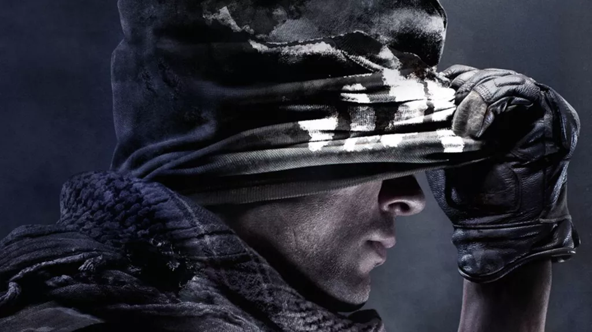
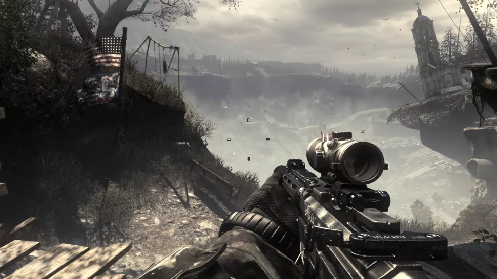
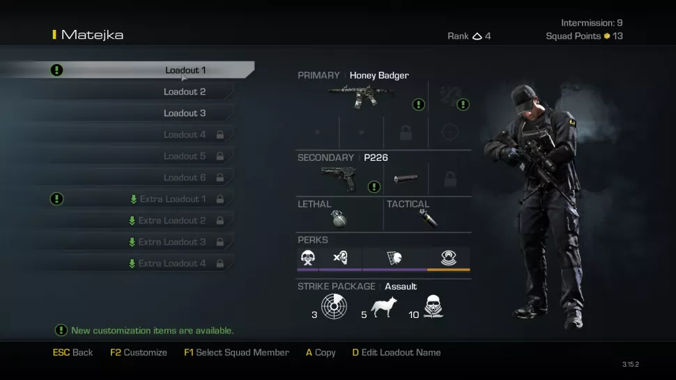

I played the worst Call of Duty in 2021 and deserved what I got
By Morgan Park 3 days ago
Everything you need to know about the latest update.
(Image credit: Activision)
You know the old saying "They just don't make them like they used to?" When it comes to Call of Duty, that's really for the best. I was reminded of the series' awkward grey/beige years when I got curious about playing the 'worst' Call of Duty game ever and started looking over its very detailed Wikipedia page. That's when I remembered that Call of Duty: Ghosts exists.
We gave the 2013 Call of Duty a measly 67% at the time and it currently sits at a 68 on Metacritic. Eight years later, I wish I could say it aged gracefully.
I played some Call of Duty Ghosts in 2013, but somehow I completely forgot how absurd the beginning of the campaign is. In the first 10 minutes you control an astronaut overseeing a sub-orbital superweapon as it's hijacked by baddies. Then you just start floating through hallways firing off space rifles! Miraculously, the bullets don't puncture and depressurize the station and the bad guys manage to fire "kinetic bombardments" on coastal California that trigger mega-earthquakes. It's basically the plot of Geostorm before Geostorm.
(Image credit: Activision)
And then, you get a dog. That's right—the same Call of Duty dog from that one gif that's way funnier than it has any right to be. It might be the only thing from Call of Duty Ghosts that deserves to be remembered.
Your canine partner Riley can rush at enemies to distract or kill for you on command, which is kinda neat, but superfluous when I have a silenced rifle that can do his job better and faster. Stealth dog tactics is a weird mechanic to build the campaign around when, most of the time, Ghosts is some extremely standard call of duty-ing. The same dynamic that enriched Metal Gear Solid 5's open-ended stealth is wasted on CoD's non-stop frantic pacing. D-Dog, Riley is not.
You'd think a campaign about elite infiltrators so incognito that their enemies call them "Ghosts" would really lean into stealth, but opportunity for subtlety comes and goes at the whim of the story. In fact, Ghosts' fumblings are especially relevant just months after playing Call of Duty: Black Ops - Cold War's campaign. Both games seem like they're constantly fighting against CoD convention, trying to become a stealth-action hybrid. In the end both lose out to familiar firefights and sleepy on-rails setpieces.
There's only one moment from the Ghosts campaign that threatens to redeem the whole thing, and that's this dog-powered reverse breach-and-clear maneuver from early in the story.
That was incredible. First place to the guy blindfiring over his head while running in panic, close second to the guy who eats 27 bullets before falling through a window. If only the whole game was half as fun as that moment.
Ghosts' multiplayer was just as uninspired as the rest of the package. Every Call of Duty typically has a "thing" to hang its multiplayer on, but the most notable changes here are a borderline useless slide and automatic corner lean. Otherwise I had a pretty chill time with the last 16 people (literally) keeping Ghosts' PC player base alive in an endless loop of Team Deathmatch. Almost every one of them was at max level and several were showing off expert quickscoping skills that had clearly been honed over the years.
I spent a while after logging off last night wondering what those 16 people see in Ghosts. What about its flavorless maps and last-last-gen weapon handling keeps them in Ghosts and not, say, any other CoD of the past decade? I couldn't parse it. Ghosts is so inessential and forgettable that I couldn't shake the thought I was playing the standalone expansion to an older game.
That's all easy to say in retrospect, but it's interesting to look at the year of games it released into as well. Ghosts was already on the backfoot releasing a full week after Battlefield 4 (84%) was blowing up. DICE delivered a bright, expansive combat sandbox that looked and felt like the future. While Ghosts boasted new map tech that could crush a car with a light pole, Battlefield 4 was letting you drop entire skyscrapers on each other.
(Image credit: Activision)
Ghosts signaled a downward trend for Call of Duty that lasted years. The series went on to create three different versions of the future, fight Kevin Spacey, try out spaceships (which didn't go over well with Tyler), then pop back to World War 2 for some reason. Each new CoD felt dated until it finally started over on a new engine with Modern Warfare 2019. Even if its setting and characters are retreads of 2007, Modern Warfare at least set an impressive new standard for arcadey FPS feel, with a downright ridiculous level of attention paid to animation and weapon feedback. It's the same foundation that now powers the 85 million-players-strong Call of Duty: Warzone.
In 2021, Call of Duty remains the de facto military shooter while Battlefield figures out what to do with itself following its own Ghosts-like debacle with Battlefield 5. Funny how that works.